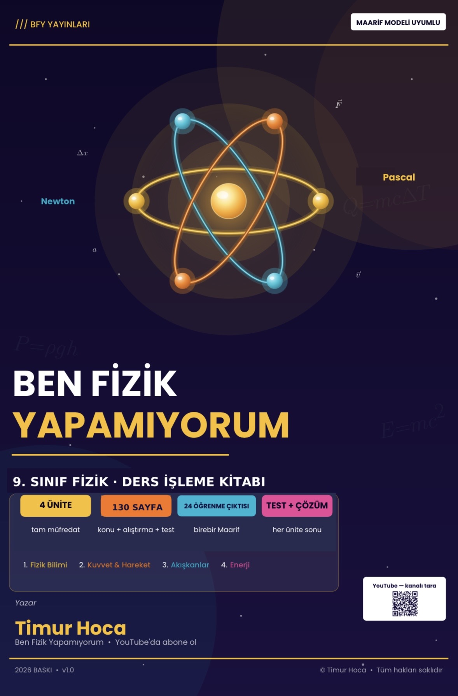

BFY / BASILI KİTAPBASILI KİTAP
9. Sınıf Fizik Ders Kitabı
Konu anlatımı ve sorular, Maarif sırasıyla tek kitapta.
İçerikte neler var?
Timur YILDIRIM’ın sınıf deneyiminden. Aynı içeriğin dijital sürümü Ders İşleme Föyü olarak da sunulur.
₺399Kargo dahil